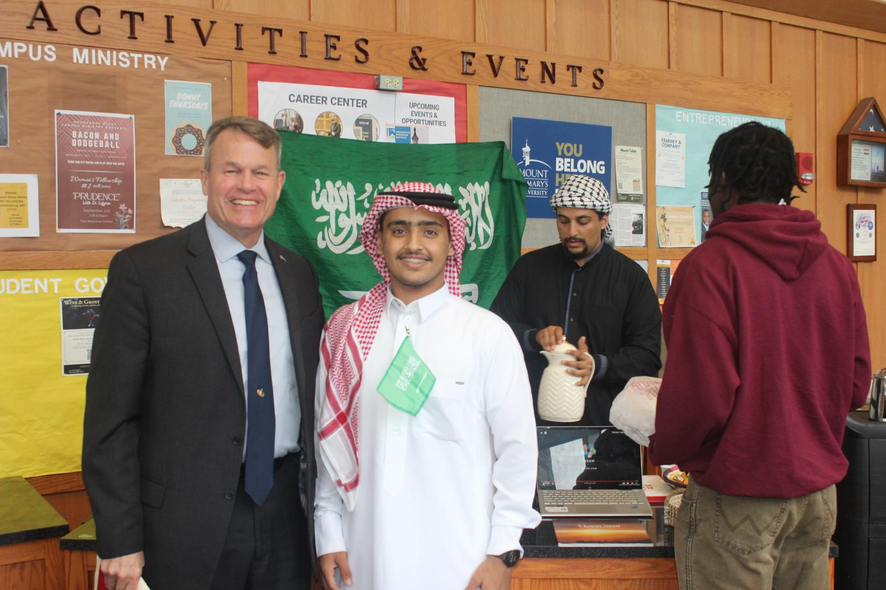

My Story
From Foundation to Growth
My academic journey began at Mount St. Mary’s University, where I built a strong foundation in Computer Science and developed important skills in programming, systems, security, and problem solving.
During my time there, I studied courses that helped shape my technical background, including Introduction to Computer Science, Computer Security, Operating Systems, Computer Architecture, Data Structures and Algorithms, UNIX and Windows Operating Systems, and Calculus.
Outside the classroom, I was also active in campus and cultural events. One of the most meaningful experiences was helping represent Saudi National Day. During that experience, I met Dr. Timothy E. Trainor, the president of Mount St. Mary’s University, and he was happy to see the event and the way Saudi culture was being represented.
Later, I transferred to George Washington University to continue my Computer Science degree. That move marked a new chapter in my journey, where I began focusing more deeply on advanced coursework, team-based software development, and real-world technical projects.
Where My Journey Started
Mount St. Mary’s University was the place where I began building my academic foundation in Computer Science.

Representing Saudi National Day
This photo was taken with Dr. Timothy E. Trainor when I was taking part in a Saudi National Day event. It reflects an important part of my journey, where I represented my culture, met the president of the university, and took part in campus life in a meaningful way.